El cliente en su territorio
Cultivos, plantas industriales y montañas en lugar de oficinas genéricas: la foto cuenta dónde ocurre el cambio.
Carruseles para el videopodcast Coffee Break, donde líderes de talento humano cuentan cómo transformaron sus procesos. El reto: convertir un caso de éxito B2B en algo que la gente quiera deslizar hasta el final.

Cada episodio se convierte en un carrusel con la misma estructura: gancho, contexto, testimonio, cifra y llamado al episodio. La identidad de la serie se apoya en tres recursos: fotografía del territorio del cliente, una caligrafía en verde lima para la palabra clave y cifras de gran formato.
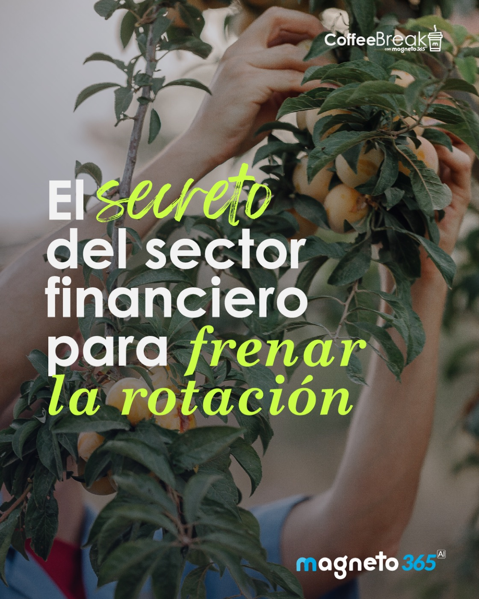
1 · Gancho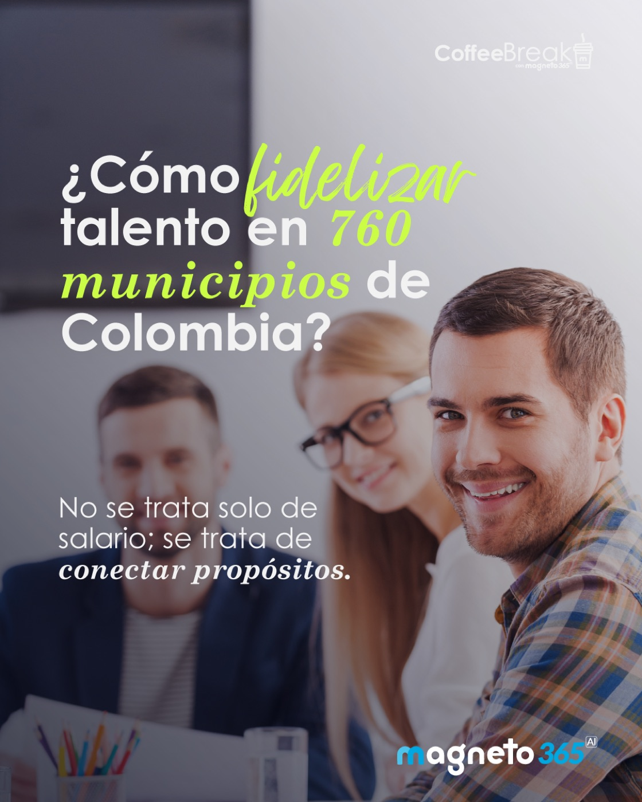
2 · Contexto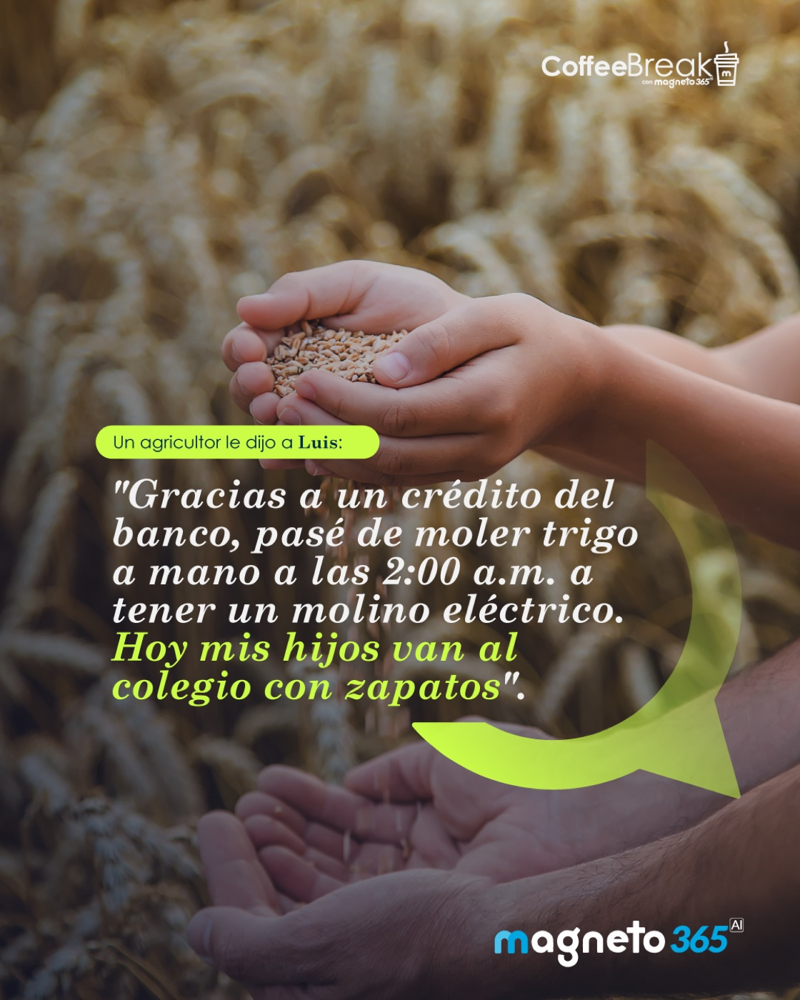
3 · Testimonio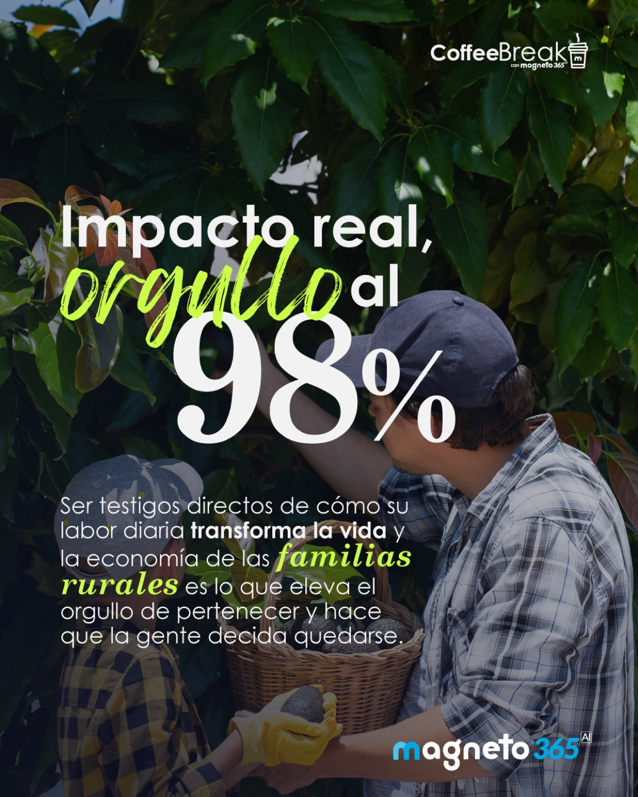
4 · Cifra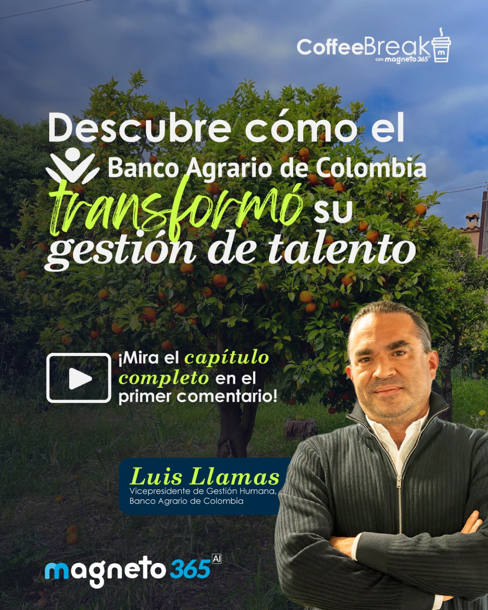
5 · Llamado 1 · Gancho
1 · Gancho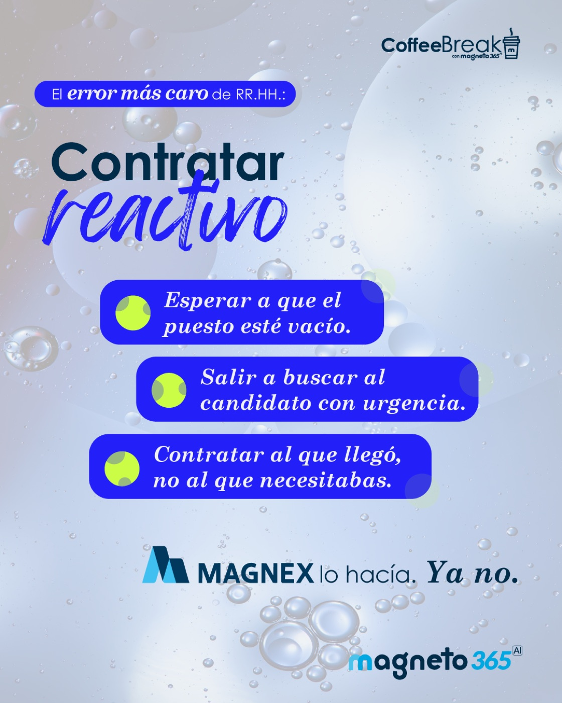
2 · Problema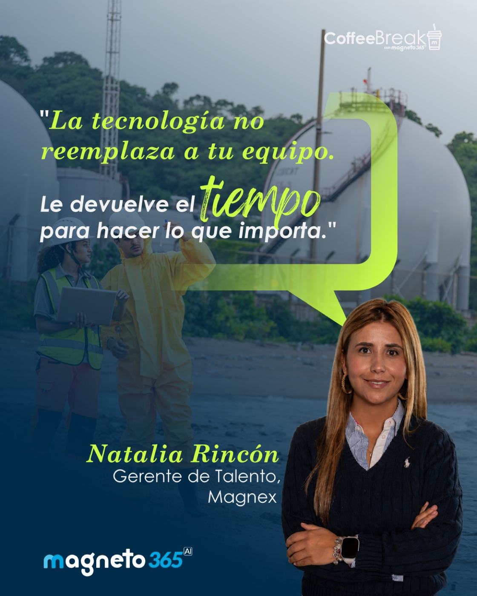
3 · Testimonio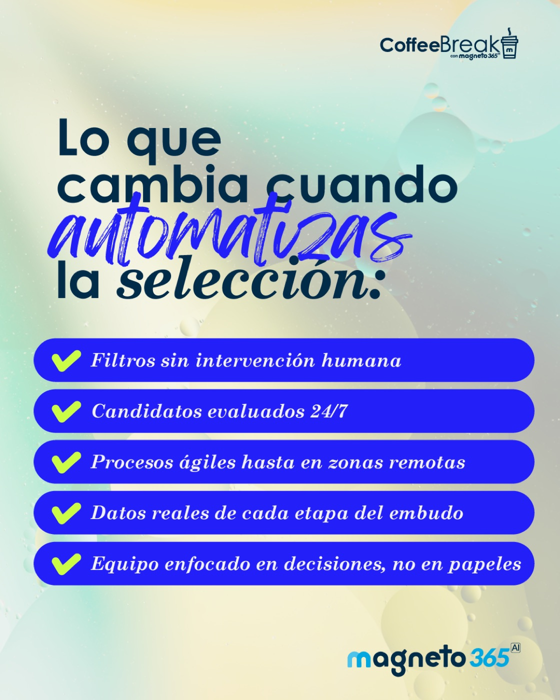
4 · Beneficios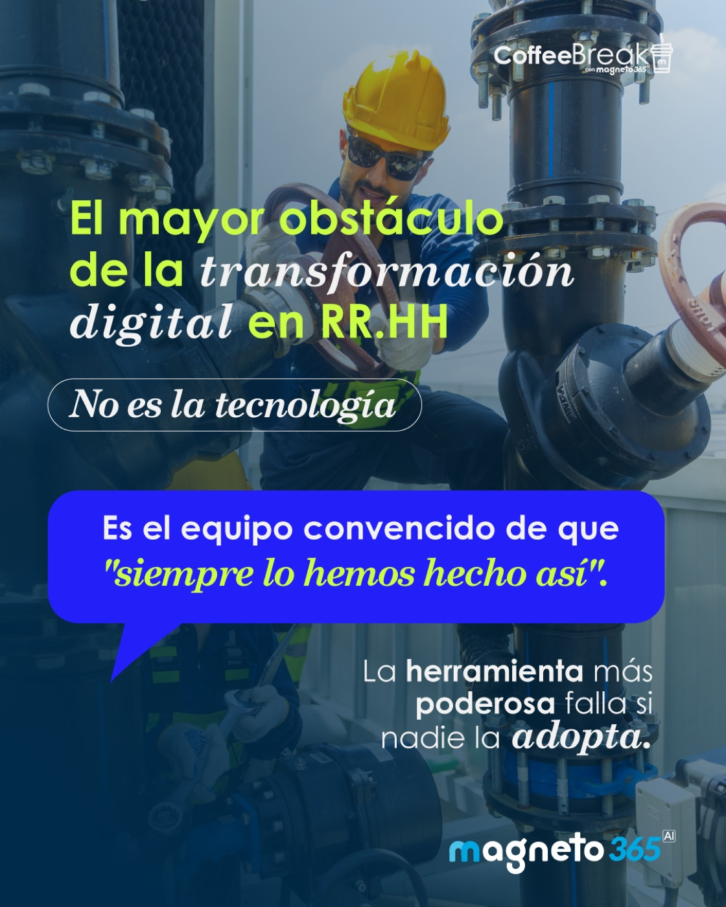
5 · Insight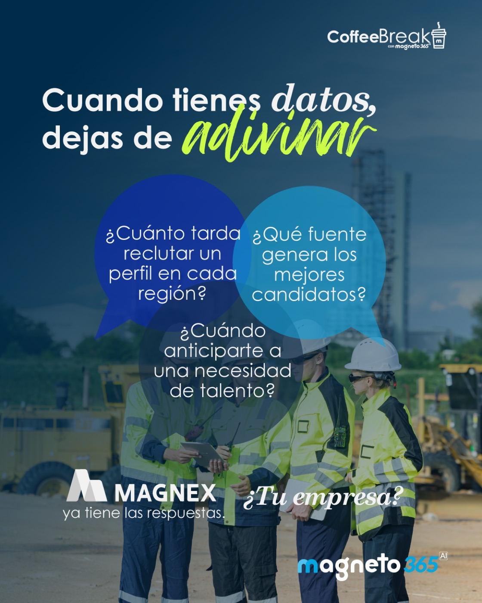
6 · Datos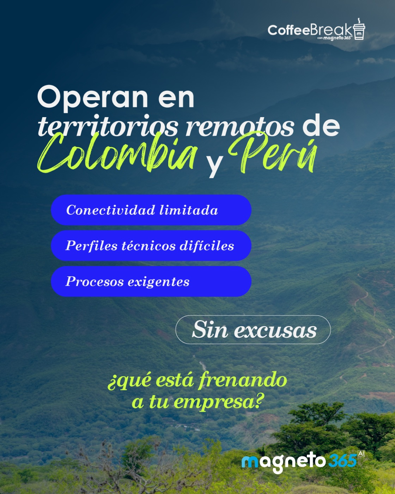
7 · Contexto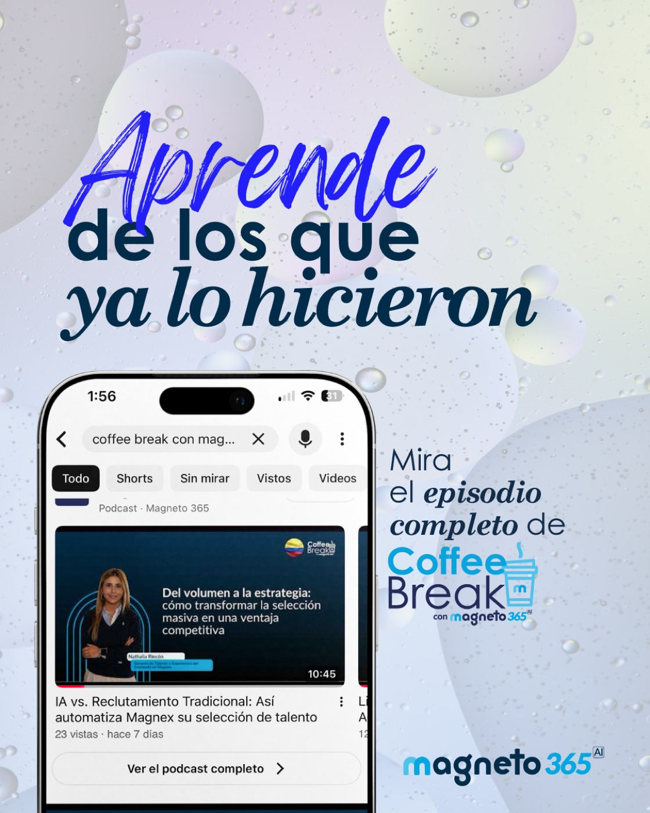
8 · LlamadoCultivos, plantas industriales y montañas en lugar de oficinas genéricas: la foto cuenta dónde ocurre el cambio.
La caligrafía lima marca la idea clave de cada lámina y se vuelve la firma visual de la serie.
25 → 3 y 98 % ocupan la lámina entera: el dato es el argumento.